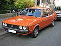

| Autos | Ubica tu consecionaria | Contacto |
|---|
Es un automóvil de turismo del segmento D producido por el fabricante alemán Volkswagen desde el año 1973. Según la carrocería, la época y el mercado, distintas variantes fueron vendidas bajo otras denominaciones, como Santana, Quantum, Dasher, Magotan y Corsar. También el Passat se vendió entre 1987 y 1991 en Argentina, donde se fabricó bajo la denominación Carat.
